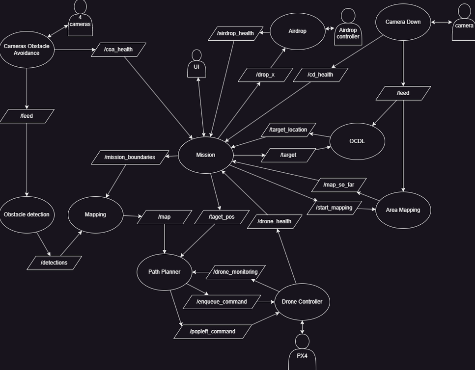
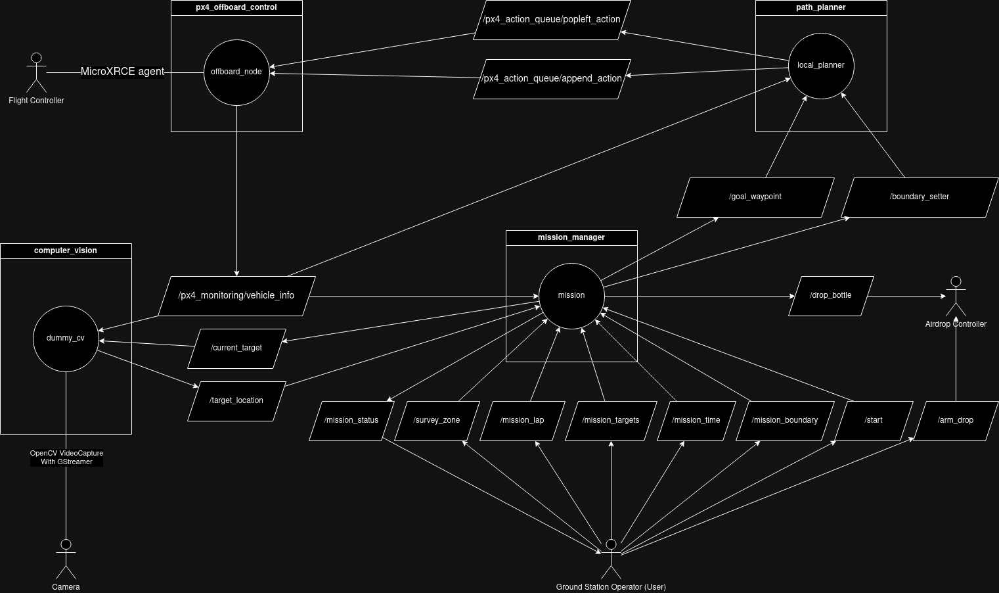

Hey, I’m Imad Issafras
A software developer with a passion for building intelligent systems and solving complex problems. I hold a B.Sc. in Computer Science from McGill University, where I honed my skills in AI, machine learning, computer vision, and software development. I thrive at the intersection of software engineering and robotics, leading McGill Robotics' drone team to develop real-time navigation and object detection systems. My experience spans backend development, cloud deployment, and AI-driven applications, including ChillGuys, an NLP-powered chat assistant for car dealerships. Beyond coding, I enjoy mentoring, tackling open-source projects, and optimizing workflows with efficient tools like Git, Linux, and Docker. Whether it's designing scalable architectures or fine-tuning AI models, I’m always looking for innovative ways to push technology forward.
Projects
As the drone division of the McGill Robotics Club, our objective is to design and develop an autonomous drone to compete in the 2025 SUAS competition . The mission requires the drone to autonomously perform a series of complex tasks within strict constraints. Initially, the drone must autonomously take off and navigate through 10 predetermined waypoints, maintaining course within the designated mission boundaries while actively avoiding obstacles such as trees and another UAV operating simultaneously in the same airspace.
After navigating these waypoints, the drone is tasked with autonomously locating and identifying targets placed in a designated area on the ground. These targets may include:
- Person/Mannequin
- Car (>1:8 scale model)
- Motorcycle (>1:8 scale model)
- Airplane (>3m wingspan model)
- Bus (>1:8 scale model)
- Boat (>1:8 scale model)
- Stop Sign (flat, upwards-facing)
- Snowboard
- Umbrella
- Sports Ball (soccer, basketball, volleyball, or football)
- Baseball Bat
- Bed/Mattress (larger than twin size)
- Tennis Racket
- Suitcase
- Skis
Once the drone identifies the specified target, it must perform a precise water-bottle airdrop directly onto it. This waypoint identification and payload delivery must be repeated a total of four times. Following successful completion, the drone must autonomously return and safely land at its initial takeoff point. The entire mission must be completed within a 30-minute time limit, which demands careful management of energy resources.
To effectively meet these demanding criteria, our team decided to develop a Vertical Take-Off and Landing (VTOL) aircraft, which combines the agility and maneuverability of a quadcopter with the speed and endurance advantages of fixed-wing flight. This hybrid design introduces considerable complexity, particularly in software management of the flight transitions between quadcopter and fixed-wing modes.
Throughout the project, our team conducted extensive requirement elicitation and detailed system design, resulting in a comprehensive architecture represented by a ROS2 node graph:

Currently, our progress includes completing the drone’s flight controller node in C++, as well as portions of the mapping nodes. Given my substantial prior experience with the PX4 flight controller firmware—acquired through extensive documentation research during last year's competition—I developed the controller in C++ to ensure optimal real-time performance on our constrained onboard computer, the Jetson Orin Nano. This choice marked a deliberate departure from the previous year's Python implementation, which proved inadequate for the system's real-time demands. Despite the complexity introduced by transitioning from a pure quadcopter to a hybrid VTOL system, our iterative development process, rigorous testing, and perseverance have resulted in a robust and reliable flight controller.
Parallel to the flight software development, other team members have been generating a custom dataset for training and fine-tuning the drone’s computer vision models. Utilizing Blender’s scripting capabilities, this dataset aims to provide accurate recognition and classification of the diverse targets listed above.
As this project is ongoing, further developments are anticipated. For reference, additional information on the drone built for the 2024 competition, which shares similar goals, can be consulted.
For The CodeJam 14 hackathon, we tackled the challenge outlined in this repository, which required us to develop an AI chatbot capable of assisting customers in finding cars based on their preferences. The goal was to create an engaging and efficient chatbot that could retrieve and process relevant car listings while maintaining a distinct personality.
Project Breakdown
Our team of two split responsibilities: I focused on developing the backend AI chatbot, while my teammate handled the frontend and server endpoints. To achieve our goal of a chatbot capable of retrieving relevant data, I needed to research retrieval methods and discovered Retrieval-Augmented Generation (RAG).
Implementing Retrieval-Augmented Generation (RAG)
RAG is a framework that enhances a language model’s responses by retrieving relevant data from an external knowledge base before generating an answer. This was ideal for our chatbot, as it allowed us to dynamically fetch relevant car listings rather than relying solely on pre-trained knowledge, reducing hallucination and improving response accuracy.
Creating the ChillGuy Personality
Beyond functionality, we wanted our chatbot to embody the personality of the 'My New Character' meme—relaxed, easygoing, and nonchalant. This required careful prompt engineering to ensure the AI’s tone remained in line with this persona.
Challenges and Solutions
One key decision was to avoid reliance on external APIs like OpenAI’s models or Pinecone’s vector database. Instead, I opted for open-source models and self-hosted vector search to ensure independence and scalability. This led me to LangChain, a framework designed for building AI-powered applications with composable modules.
Why LangChain?
LangChain provided the necessary tools to:
- Integrate local models via Ollama, which simplified running LLaMA models—the best available open-source LLM at the time.
- Utilize ChromaDB, a built-in local vector database for storing and searching embeddings.
- Enable retrieval-based augmentation, allowing us to dynamically fetch relevant car listings based on user queries.
Implementing the AI Backend
The chatbot's prompt structure consisted of four key components:
- System Prompt – Defined the chatbot’s goal and personality.
- Relevant Cars – A dynamic section populated through vector similarity search.
- Past Conversation History – Provided context by tracking previous interactions.
- Current User Prompt – The latest user query.
The challenge was in populating the 'Relevant Cars' section effectively. To achieve this:
- Each car listing was converted into a document, embedded into a vector, and stored in ChromaDB.
- At query time, we performed vector similarity search, retrieving cars with embeddings closest to the user’s query.
- However, with 100,000 cars, each having 30+ attributes,
embedding everything was computationally expensive. To
meet the hackathon deadline, we:
- Reduced the fields per car to 10 (e.g., seats, condition, model, make).
- Moved computations to a Google Cloud Compute Engine with a powerful GPU.
- Optimized embeddings, reducing processing time from 10 minutes per 1,000 cars to embedding all cars in 30 minutes.
Final Submission & Lessons Learned
While our chatbot functioned, it occasionally hallucinated. Given more time, we could have improved its accuracy by:
- Combining vector search with keyword search for better retrieval.
- Filtering duplicate car listings.
- Implementing a judge model to validate retrieved results before inclusion in the prompt.
Despite starting just 24 hours before the deadline (out of the allotted 50 hours) and being a team of two instead of four, we successfully built and deployed the chatbot. Our final submission is available here: ChillGuy Chatbot.
This project was a deep dive into retrieval-augmented generation, prompt engineering, and AI system design, and served as a valuable learning experience in developing agentic AI models using open-source tools.
As part of the McGill Robotics Club, our team was tasked with developing an autonomous drone for the SUAS Competition 2024 (SUAS Website). This competition fosters interest in Unmanned Aerial Systems (UAS) and requires teams to design a fully autonomous drone capable of performing complex aerial missions.
Competition Requirements & Constraints
The competition involved designing a drone that could autonomously:
- Take off and navigate through 10 waypoints while remaining within a defined mission boundary.
- Identify and classify targets—either a mannequin or a paper cutout of a shape containing a letter, where the combination of shape and letter colors uniquely identified the target.
- Perform four precise airdrops, matching each airdrop payload (a water bottle) to its designated target.
-
Adhere to flight constraints:
- Maintain an altitude between 50 to 400 feet Above Ground Level (AGL).
- Complete the mission within 30 minutes.
- Operate with a maximum of two human operators to avoid penalties.
Given these constraints, the team initially planned a VTOL (Vertical Takeoff and Landing) drone to maximize endurance and efficiency, allowing for long-range waypoint navigation while maintaining precise control during takeoff, landing, and airdrops.
Leadership Challenges & Project Restart
The project struggled early on due to the absence of a software lead, leaving the team without clear direction and resulting in significant member attrition. As one of the more experienced developers remaining, I was asked to step in as software lead. However, I had never worked under a lead before, making it difficult to structure the team's efforts effectively.
Additionally, midterms and finals led to decreased participation, with most of the software team only completing ROS2 tutorials without writing any actual code. While the tutorials were intended to build familiarity with ROS2, many members struggled to translate that knowledge into practical implementation, leading to stagnation in development. By the end of winter break, the project lacked both a working codebase and a clear design.
To address this, I applied requirement elicitation techniques from my software engineering class, analyzing the rulebook to create:
- An environment model
- A domain model
- A concept model (see below)
With a structured plan in place, I reassigned tasks. However, many team members lacked confidence, struggled with the complexity of their assignments, and were unsure how to proceed. Some had difficulty applying theoretical knowledge to practical implementation, while others felt overwhelmed by the project scope, leading to delays in task completion. Over time, I had to take on the majority of the software development myself, as unreliable contributions were delaying progress.
Adapting Scope & System Design
With competition two months away, we faced a major constraint—VTOL functionality was not feasible in time due to a combination of technical complexity, lack of prior experience with VTOL systems, and the time required to integrate and test the transition between quadcopter and fixed-wing flight. We pivoted to a quadcopter-only approach, requiring a rapid software redesign. I created a ROS2 node architecture to handle mission execution:
ROS2 Node Architecture
The architecture consisted of the following key nodes:
- Offboard Node - Implements an action queue (takeoff, land, waypoint navigation) and abstracts communication with the PX4 flight controller, simplifying interactions for other nodes. This setup streamlined command execution and drone state monitoring but restricted us to quadcopter mode because MicroXRCE, a module that exposes PX4's internal pub-sub topics as ROS topics, lacked support for VTOL transitions.
- Local Planner (VFH+) - A Vector Field Histogram Plus (VFH+) planner for navigating towards waypoints while avoiding mission boundary violations. Originally designed for obstacle avoidance, but due to hardware limitations—specifically, the lack of suitable onboard sensors and insufficient processing power to handle real-time obstacle detection—we had to disable this functionality.
- Mission Node - A finite state machine that managed mission execution by determining the sequence and logic of topic publications for each mission state. It acted as the central controller, orchestrating the entire drone operation. The possible states included WAITING, PERFORMING_LAP, SURVEY_AREA, PERFORMING_AIRDROP, and RTH (Return to Home). Additionally, this was the primary node that users interacted with to set mission parameters and initiate the mission start signal.
-
Dummy CV (Computer Vision Node) - Handled target
identification during the survey phase using two YOLOv8
models:
- One model detected shapes and letters, while the other was used for mannequins.
- The color detection is done through various OpenCV utilities and the HSV color space.
- Once a target was identified, its ground position was calculated and sent to the mission node.
- Airdrop Controller (Micro ROS Node) - Ran on an Arduino Due, responsible for controlling the airdrop mechanism via ROS commands. It supported arming and releasing payloads on specific hubs.
Competition Outcome & Lessons Learned
Despite numerous hurdles, we competed for the first time in four years. This was made possible by our ability to rapidly adapt to new constraints, streamline our mission scope, and dedicate intense effort in the final months to ensure a functional system was ready for competition. While we faced challenges in execution, given it was our first full-scale attempt, we gained valuable experience and insights for future competitions, we won the Tenacity Award for persevering through the challenges. This experience provided valuable insights into team leadership, rapid prototyping, and real-world autonomous system development. One key lesson was the importance of structured leadership—having a clear roadmap and assigning tasks effectively can make or break a project. Additionally, we learned that adaptability is crucial; simplifying our approach and pivoting to a quadcopter-only design allowed us to meet deadlines and still deliver a functional system. This trade-off sacrificed endurance and speed but significantly improved system stability and reduced integration complexity, making it a more viable solution within the competition’s constraints.
As part of a year-long software engineering project class, our team of seven was tasked with developing an online multiplayer adaptation of Splendor, a turn-based competitive strategy card game. The project followed a structured development process with several milestones, culminating in a fully functional multiplayer game with a 92% final grade.
Project Scope & Technology Stack
We implemented the game using Java with the following technologies:
- Backend: Spring Boot (RESTful API), PostgreSQL (database), Docker (deployment), MVC architecture.
- Frontend: JavaFX with FXGL (entity-component-based game engine) for dynamic UI and interactive gameplay.
- Networking: RESTful services to handle game sessions and player interactions.
- Deployment: Dockerized backend for consistent deployment across environments.
Development Process & Key Contributions
After completing early modeling milestones, our team began with the frontend implementation. My primary task was to develop in-game action prompts—a crucial component that involved handling 11 different types of prompts. Anticipating future expansions, I implemented a Strategy Design Pattern, allowing for easy scalability and adaptability as new game rules and prompt types were introduced. This approach ensured a modular and maintainable prompt-handling system.
For the backend, we set up Spring Boot and structured the codebase using MVC (Model-View-Controller) to ensure maintainability. My primary contributions included:
- Designing and implementing RESTful API endpoints for client-server communication.
- Parsing incoming requests, converting them into backend-compatible models, and updating game state accordingly.
- Implementing long polling to synchronize the frontend with real-time model changes.
- Writing test cases to ensure 80%+ code coverage, following a test-driven development (TDD) approach.
Challenges & Solutions
Throughout the project, we faced several technical and organizational challenges:
- Team Coordination & Task Management: Regular meetings were held to align tasks, discuss progress, and tackle complex features collaboratively.
- Scalability & Maintainability: The use of Microservices Architecture improved system modularity and performance.
- Secure User Authentication & Data Management: PostgreSQL managed user information, including hashed credentials and game session data.
- Deployment Consistency: Docker was used to containerize the backend, ensuring smooth deployment across different environments.
Final Outcome & Lessons Learned
For our final milestone, we successfully delivered a fully functional multiplayer card game supporting real-time online play for at least three concurrent players across separate machines. Our implementation adhered to official Splendor game rules, including turn-based mechanics, resource management, and victory conditions.
This project reinforced my skills in collaborative software development, system architecture design, RESTful API development, and UI/UX implementation. It also validated my passion for writing clean, maintainable code while working in a team-driven environment.